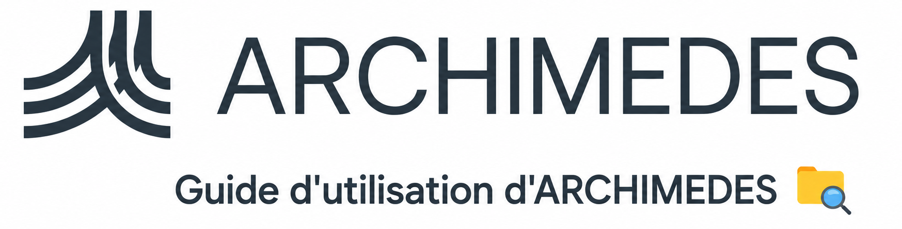

Bienvenue à

À qui s'adresse ce guide? 📘
Ce guide s'adresse aux utilisateurs qui commencent à utiliser ARCHIMEDES. Il fournit des instructions étape par étape sur la création d'un compte, l'accès aux données, le transfert de données, la diffusion des données, ainsi que sur la recherche et l'analyse des données au sein de la plateforme.
Pour plus d'informations, consultez la FAQ ou la Gouvernance des données.
Qu’est-ce qu’ARCHIMEDES? 
ARCHIMEDES (Advanced Research Collaboration for Health Integration, Medical Exploration, and Data Synthesis) est une plateforme nationale bilingue de données numériques sur la santé qui permet aux chercheurs de collecter, gérer, partager et effectuer des analyses, notamment des analyses biostatistiques, des modélisations prédictives, des visualisations de données et des analyses basées sur l’intelligence artificielle. ARCHIMEDES est équipé pour collecter ou ingérer des données multimodales sur le cerveau, le cœur et la santé mentale (par exemple, des données comportementales, des données d’imagerie, des données sur les matériaux des biobanques et des données administratives).
Toutes les données disponibles sur ARCHIMEDES sont codées et/ou dépersonnalisées avant leur importation afin d'assurer la protection de la vie privée et la conformité.
Pourquoi utiliser ARCHIMEDES? 🤝
La recherche en santé est souvent ralentie par des sources de données fragmentées, des infrastructures complexes et un accès limité à des ensembles de données de haute qualité.
➡️ ARCHIMEDES réunit tout au sein d'une plateforme sécurisée — données, gouvernance et outils d'analyse — afin de permettre aux chercheurs de travailler plus efficacement et de façon collaborative.
➡️ Cet environnement intégré réduit le temps et les efforts consacrés à la gestion des données et à la configuration technique, permettant aux chercheurs de se concentrer sur l'analyse et la découverte.
Avec ARCHIMEDES, vous pouvez :
🧬 Accéder à des ensembles de données de santé multimodales sélectionnées au même endroit
⚙️ Analyser les données de manière sécurisée dans un environnement HPC (calcul haute performance) intégré
🔐 Réduire les obstacles techniques et administratifs à la recherche
🤝 Améliorer la reproductibilité et la collaboration entre les équipes
En simplifiant la façon dont les données de santé sont accessibles et utilisées, ARCHIMEDES vous permet de vous concentrer sur l'avancement de la recherche et la création d'un impact significatif sur la santé.
🧭 Notre vision consiste à transformer le paysage canadien des données sur la santé en créant une plateforme nationale bilingue pour la conservation, la fédération et la réutilisation des données multimodales sur la santé. ARCHIMEDES offre aux utilisateurs un accès sécurisé et flexible à des données de haute fidélité sur la santé afin de favoriser la collaboration, la découverte et l’innovation pour la santé des Canadiens.
Quels types de données sont hébergés? 🧬
ARCHIMEDES héberge des données de santé multimodales sélectionnées, notamment des données de recherche, des données comportementales, des données d’imagerie, des données sur les biomatériaux et des données administratives. Cela comprend à la fois les données provenant de participants à des recherches humaines et les données ne provenant pas de participants à des recherches humaines (c’est-à-dire les données précliniques).
Comment accéder aux données? 🔐
ARCHIMEDES utilise un système d'accès flexible qui permet aux contributeurs de données de déterminer comment leurs ensembles de données sont partagés et accessibles.
Les données sur ARCHIMEDES sont actuellement partagées selon deux niveaux :
1. Accès contrôlé 🔒
➡️ Les données sont exclusivement mises à la disposition des chercheurs principaux (CP) et de leur équipe de recherche, pour un objectif de recherche approuvé. Les demandeurs doivent d'abord obtenir l'approbation du bureau de conformité de l’accès aux données ARCHIMEDES (DACO) et du comité d’accès aux données ARCHIMEDES (DAC), et conclure un accord d'accès aux données (DAA).
ℹ️ : Les demandes d’accès aux données (DAR) peuvent uniquement être soumises par les chercheurs principaux (CP)
2. Accès libre 🔓
➡️ Les données sont mises à la disposition de tous par l'intermédiaire d'ARCHIMEDES, sur un site Web public. Au cours de cette première phase d'ARCHIMEDES, seules les données précliniques (c.-à-d. non humaines) sont disponibles en accès libre.
Un troisième niveau, Données d’accès enregistrées, sera disponible pour les utilisateurs d'ARCHIMEDES lors de la prochaine phase de développement de la plateforme.
Comment fonctionne ARCHIMEDES? ⚙️
ARCHIMEDES prend en charge plusieurs types de données qui peuvent être ingérés et harmonisés au sein de la plateforme. Une fois disponibles, les données peuvent être consultées et analysées de manière sécurisée à l'aide d'outils intégrés de traitement, d'analyse des données et de visualisation.
➡️ La plateforme fournit également un environnement de calcul haute performance (HPC), permettant aux utilisateurs d'effectuer des analyses sans avoir besoin d'une infrastructure externe.
Le schéma ci-dessous illustre la structure et les capacités de la plateforme.